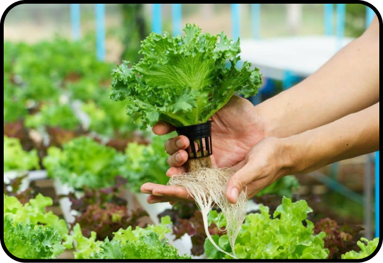
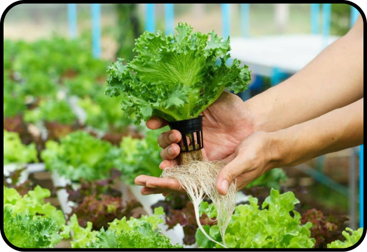

Hydroponics farming, also referred to as soilless farming, is a method that uses a combination of water
and nutrient solution - the water does not reach the plant’s roots through soil, but directly
instead.
This allows for a massive number of benefits, especially when compared to traditional
farming.
To name a few of these benefits:
Hydroponic systems are extremely scalable
:
Systems can range from only growing a few plants to growing hundreds in a single container!
Additionally, vertical farming allows for incredible space saving capabilities, allowing the grower to
fully utilize the available space without constraints.
There are various types of hydroponic systems
:
From Deep Water Culture (DWC) to Aeroponics, hydroponics has the benefit of the grower fully having
control over the workings and components of the system. This means that the system can be decided on
based on factors such as budget, available resources, space restrictions, plant species, and more,
allowing for each system to be customized based on the grower and their farming goals!
Hydroponic systems are more cost-effective
:
While the initial cost of these systems are higher than traditional farming systems due to the
purchase of the needed components, the maintenance costs in the long run will turn out to be much
cheaper. This is because hydroponics do not require as much resources (water, pesticides, fertilizer,
etc.) as traditional systems when managed efficiently.


 
